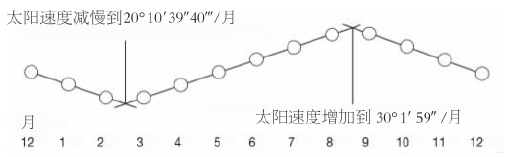
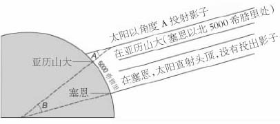
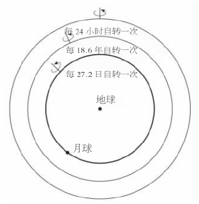
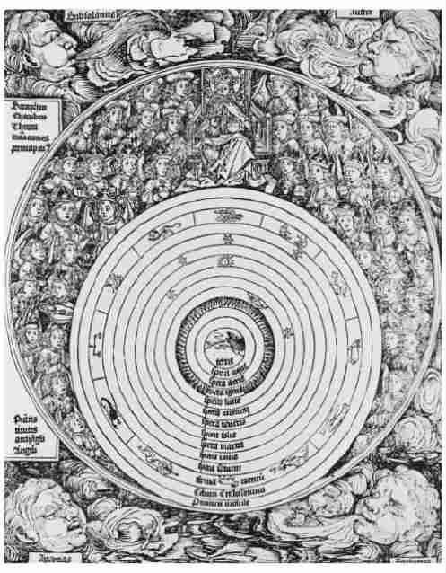
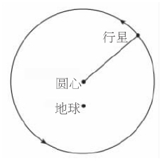
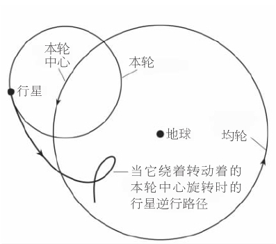
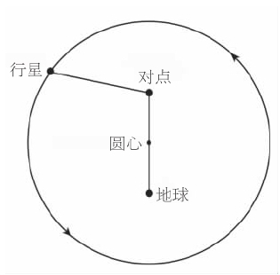
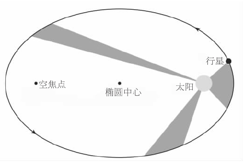

现代天文学的开端最初在公元前第三个和第二个千年的史前迷雾中浮现，起始于在埃及和巴比伦发展起来的日趋复杂的文化。在埃及，一个辽阔王国的有效管理依赖于一部得到认可的历法，而宗教仪式要求有在夜间获知时刻以及按基本方向定出纪念物（金字塔）方位的能力。在巴比伦，王位和国家的安全依赖于正确解读征兆，包括那些在天空中被见到的征兆。
因为在太阴月或太阳年中没有精确的日数，同样在一年中也没有精确的月数，所以历法历来是，现在也依然是难以制定的。我们自己月长度的异常杂乱正说明这是自然界向历法制定者提出的一大难题。在埃及，生活为一年一度的尼罗河泛滥所主宰。当人们注意到这种泛滥总是发生在天狼星偕日升前后，也就是当这颗恒星在经历几周的隐匿后再度出现于破晓的天空中时，他们就找到了历法问题的一种解决方案。因此，这颗恒星的升起可以被用来制定历法。
每年由12个朔望月和大约11天构成，埃及人从而制定出一种历法，其中天狼星永远 在第12个月中升起。倘若在任一年中，天狼星在第12个月中升起得早，来年就还会在第12个月中升起；但若在第12个月中升起得晚，则除非采取措施，否则来年天狼星将在第12个月过完之后才升起。为了避免这样的事发生，人们就宣布本年有一个额外的或“插入的”月。
这样一种历法对于宗教节庆而言是适宜的，但对于一个复杂的和高度组织化的社会的管理而言则不然。所以，为了民用目的，人们制定了第二种历法。它非常简单，每年都是精确的12个月，每个月由3个10天的“星期”组成。在每年的末尾，人们加上额外的5天，使得一年的总日数为365天。因为这种季节年实际上稍长数小时（这就是为什么我们有闰年），所以该行政历法按照季节缓慢地周而复始，但是为了管理上的方便而采用这样一种不变的模式还是值得的。
因为有36个10天构成的“星期”，所以人们在天空中选用36个星群或“旬星”使得每10天左右有一颗新的“旬星”偕日升起。当黄昏在任一夜晚降临时，许多旬星将在头顶显现；到了夜晚，地平线上将每隔一段时间出现一颗新的旬星，标志着时间的流逝。
天空在埃及的宗教中起着重要的作用，因为在其中神祇以星座的形式出现，埃及人在地球上花费了巨大的人力，以保证统治着他们的法老有朝一日会位列其中。公元前第三个千年，法老的殡葬金字塔几乎精确地按南北方向排列成行，我们从中看到了一些端倪，至于这一排列是如何实现的，已有诸多争论。一个线索来自排列的微小误差，因为这些误差随建造日期而有规律地变化。最近有人提出，埃及人有可能是参照一条虚拟的线，这条线连接两颗特殊的恒星。在所有时间里，这两颗恒星都可以在地平线上见到（拱极星），当该线垂直时，就取朝向这条线的方向为正北。如其如此，由于地轴摆动（称为进动）所致的天北极的缓慢运动就可以解释这种有规律的误差。
埃及人为他们几何学和算术上的原始状态所制约，对恒星和行星的更难以捉摸的运动不甚了了，尤其是他们的算术几乎是无一例外地用分子为1%的分式来运算。
相比之下，在公元前两千年，巴比伦人发展了一套算术符号，这一项了不起的技术成为他们在天文学上获得显著成就的基础。巴比伦的抄写员取用一种手掌大小的软泥版，在上面用铁笔刃口向外侧刻印表示1，平直地刻印表示10，按需要多次刻印，他就可以写出代表从1到59%的数字，但是到60时，他就要再次使用1的符号，就像我们表示10这个数字那样，类似地可以表示60×60，60×60×60，等等。在这个60进制的计数系统中，可以书写的数字的精确性和用途是没有限定的，甚至在今天我们仍然在继续使用60进制来书写角度以及用时、分和秒来计算时间。
巴比伦宫廷官员对所有种类的征兆都保持着警惕——尤为关注的是绵羊的内脏——他们保留着任何一个不受欢迎但接着发生的事件的记录，以便从中吸取经验：当征兆在未来再次发生时，他们就会知道即将到来的灾难的性质（该征兆是一种警示），于是就可以举行适当的宗教仪式。这就促使人们汇编了一部包含7000个征兆的巨著，它成形于公元前900年。
此后不久，为了使他们的预测更为精确，抄写员开始系统地记录天文（及流星）现象。这样的记录延续了7个世纪，太阳、月球和行星运动的周期开始逐渐地从记录中显露。借助于60进制计数法，抄写员设计出运算方法，利用这些周期来预报天体的未来位置。例如，太阳相对于背景星的运动在半年中加速，在半年中减速。为了模拟这种运动，巴比伦人设计了两个方案：或者假定半年采用一个均匀速度，半年采用另一个均匀速度；或者假定半年采取匀加速运动，半年采取匀减速运动。两者都仅仅是对真实情况的人为模拟而已，但他们完成了这项工作。

图2巴比伦人对太阳相对于背景星运动速度的第二套模拟方案的现代表达。其中的数值见于公元前133或前132年的泥版。在这个人为的但却便于运算的表示法中，太阳的速度被想象成在6个月中作匀加速运动，然后在随后的6个月中作匀减速运动。人们发现这一方案的准确性能令人满意。
对于公元前4世纪以前的希腊天文学，我们的知识非常零碎，因为很少有那个时期的记载留传下来，而我们所拥有的，很多是即将被亚里士多德（公元前384——前322）抨击的主张中的引证。但有两个方面引起了我们的注意：首先，人们开始完全按自然的条件来理解自然，而没有求助于超自然；第二，人们认出了地球是个球状体。亚里士多德正确地指出，月食时地球投射在月面上的影子总是圆的，只有当地球是一个球体时，才会如此。

图3埃拉托斯特尼为了测量地球所用的几何学，角度A和B是相等的。
希腊人不仅知道地球的形状，而且埃拉托斯特尼（约公元前276——约前195）还对地球的实际大小做出了相当准确的估计。从那以后，受过少量教育的人都知道地球是球形的。
埃拉托斯特尼对球形地球周线的测量
埃拉托斯特尼相信，在现称阿斯旺 [1] 的地方，夏至日的正午，太阳位于头顶，而在阿斯旺正北5000希腊里的亚历山大，太阳的位置与太阳直射头顶处的距离为一个圆周的五十分之一。如其如此，则简单的几何学显示，地球的周长是5000希腊里的50倍。希腊里的现代等值是有争议的，但无疑250000希腊里这个值是近似正确的。
看起来，天空也是如此。而且，我们始终看见的正好是天球的一半，因此地球必定是位于天球的中央。于是经典的希腊宇宙模型形成了：一个球形地球位于一个球形宇宙的中心。
在艾萨克·牛顿时代仍被用于剑桥大学教学的亚里士多德多卷著作中，亚里士多德比较了位于宇宙中心的地球区——几乎延伸到远至月球处——和位于其外的天区。在地球区，变化、生死、存灭都在发生。地球在最中心；环绕着地球的是水层，然后是大气层，最后是火层。物体由这些要素按不同比例构成。在没有外力的情况下，物体会按直线运动，或者向着地心或者背离地心，从而使得离地心的距离合乎其元素构成。于是，本质似泥土的石头向着地心坠落，而火焰则向着火球升腾。
紧接着，火球之外就是天区的开始。在天区里，运动是周期性的（从不是直线运动），所以不存在真正的改变。天空最高处是转动着的球层，由不可计数的“固定”恒星构成，之所以说“固定”，是因为恒星的相对位置从不改变。不固定星体的数目正好是7个：月球（明显是所有星体中最近的）、太阳、水星、金星、火星、木星和土星。这些星体相对于固定恒星运动着，并且因为它们的运动是永远变化的（的确，5个较小的星体实际不时地反向运动），所以它们被通称为“流浪之星”或“行星”。亚里士多德的老师柏拉图（公元前427——前348/前347）天生是个数学家，曾视行星为对他的信念（我们生活在一个受规律支配的和谐宇宙中）的一种可能的反驳。但是，这是否也可能表明，行星的运动实际上像恒星的运动一样具有规律，唯一的差别是支配行星运动的规律更为复杂而不是一目了然？
应对挑战的是几何学家欧多克斯（约公元前400——约前347），他为每颗行星设定了一个由三四个同心球构成的叠套系统，用于以数学方法演示行星的运动毕竟是似有规律的。他想象每颗行星位于最内球体的赤道上，该球作匀速转动并携带着行星运动，它的极被认为嵌入边上的球中并被其带动着也作匀速转动。第三个和（就较小行星而言）第四个球的情况也是如此。每个球的转动轴的角度都经过仔细地选择，其转动的速度也是如此。每种情形下，最外层的球产生该行星绕地球的周日轨迹，例如，月球诸球分别按24小时、18.6年和27.2日的周期作匀速转动，所以月球的合成运动反映着所有这三个周期。
对于5颗较小行星中的每一颗而言，其中两个天球的速率相等但方向相反地绕着差别细微的轴转动，因而这些球本身将赋予行星一种呈现8字形的运动，使得由四球叠套而成的整个系统不时地产生向后的运动。

图4 依照欧多克斯的说法，月球运动所展示的数学模式。设想月球位于最内球层的赤道上，该球层每月旋转一周，这个球的极嵌入中层天球，中层天球每18.6年旋转一周，这个周期与交食周期相似，中层天球的极嵌入外层天球，外层天球每天旋转一周。
至此，一切是如此美好。但在这些几何模型中，较小行星的向后运动（逆行）完全有规律地重复着并且明显不重现那种在天空中我们实际所见的行星的乖僻运动。而且，模型迫使每颗行星维持在与中心地球距离恒定的位置上，而在真实世界里，较小行星的亮度以及与我们的距离变化都很大。这样的缺点会使一个巴比伦人觉得讨厌，但该模型足以满足柏拉图那代人，他们认为宇宙确实是有规律的，即使其规律有待于被完全阐明。

图5 1493年出版的《纽伦堡编年史》描绘了基督教化了的亚里士多德的宇宙。中心是4种元素（土、水、气、火），然后是行星球（月球、水星、金星、太阳、火星、木星和土星），再接着是恒星天球、水晶天堂球和第一推动者。最外面我们看到的是上帝被9个等级的天使簇拥着。
亚里士多德经受着非常不同的限制：模型中的球是数学家心目中的构建物，从而没有用物理术语说明，行星如何如我们所见的那样开始运动。他的解决办法是将数学的球转换成物理实体，并将它们联合起来为整个系统构建一个组合的叠套，所有球层的最外一个，也就是固定恒星的那个天球，其周日旋转可以对位于其内的每颗行星施加一个周日转动，所以每颗行星叠套球层的最外一个球可以舍弃。但是，除非采取步骤防止，专为个别行星设计的球会把它们的运动传递给系统，因此亚里士多德在合适的地方插入了反向转动的球层，旨在抵消不需要的转动。
所得到的亚里士多德的宇宙学——一个位于中央的地球或月下区，在那里有生存和消亡，以及一个位于其外的天区，其天球产生恒星和行星的周期运动——在2000年的大半时间里，支配着希腊人、阿拉伯人和拉丁人的思想。然而，在亚里士多德的门生亚历山大大帝征服了已知世界的许多地方，从而使希腊的几何天文学开始融入巴比伦人的算术天文学和观测天文学之后，希腊几何天文学的不具变通性以及所得到的理论和观测之间的差异几乎是立即获得了修正。匀速圆周运动继续被希腊天文学家视为理解宇宙之钥，但他们现在拥有了更多的变通性并且更多地关注观测事实。

图6 在一个偏心圆上，行星照例绕地球作匀速圆周运动，但是因为地球不在圆心位置，所以行星的速度从地球上看起来会有变化。

图7 本轮是一个小圆，它携带着行星沿着这小圆作匀速运动。本轮的中心同样以匀速绕地球在一个均轮上运动。该图显示，只要适当选择两种速率，不时观测到的5颗较小行星的逆行运动就可以用这个模型来模拟。
公元前200年左右，几何学家佩尔加的阿波罗尼乌斯发展了两种几何方法来提供变通性，一种是把行星绕地球的运动视为匀速圆周运动，但该圆周相对于地球而言是偏心 的。
结果是当行星的轨道较靠近地球时，行星看起来就会运动得快一些。当行星在远离地球的一边时，运动就会显得缓慢。在另一种方法中，行星位于一个小圆即本轮 上，而本轮的中心则在一个均轮 上绕地球转动。
我们很容易评价这一设计的价值。因为，正如我们所见，金星（或别的星体）环绕着太阳转动，而太阳又环绕着地球转动。人们也许会说，天文学在正确的轨道上，不只是在正确的轨道上，而且是在一条最有希望的轨道上，因为重复地修正所涉及的各种量（参数）会引起鼓舞人心的进展，但却从来没有获得过完全的成功——直到最后开普勒放弃了圆而采用椭圆为止。
第一个使用这些设计的是喜帕恰斯，他在公元前141年和前127年之间在罗得岛进行了观测。虽然他只有一本著作留传下来，随后托勒密将其纳入《天文学大成》时已变得陈旧过时，但我们获悉他的成就还是依赖于阅读《天文学大成》。通过喜帕恰斯，希腊人的几何天文学开始整合在漫长的几个世纪中所导出的精密参数。在那几个世纪里，巴比伦人保存着他们的观测记录。喜帕恰斯汇编了一部自公元前8世纪在巴比伦观测到的月食总表，这些记录对他研究太阳和月球的运动起了决定性的作用，因为在交食时，这两个天体和地球正好排成一线。喜帕恰斯采用了巴比伦的60进制书写数字，并且将黄道圈和其他的圆划分为360度。他只用一个偏心圆就成功地还原了太阳的运动。托勒密几乎原封不动地接受了这个模型。他在研究月球运动方面不怎么成功，而将较小行星的运动留给了他的后继者。
喜帕恰斯独一无二的最重要发现是分点的岁差，即黄道与赤道相交而成的两个相反位置在众恒星之间的缓慢移动。春分点被天文学家用于确定他们的参数坐标系，而该点的移动意味着恒星的测量位置随测量日期而变化。
喜帕恰斯也编制了一部恒星星表，但是业已佚失；唯一由古代留传下来的星表是《天文学大成》中的那一部。历史学家就此展开了辩论：托勒密是自己观测到他在星表中给出的位置，还是采用了喜帕恰斯的观测位置，在作了岁差改正后，简单地将恒星位置转化成他自己的历元？
在喜帕恰斯和托勒密之间的3个世纪，是天文学的黑暗年代。至少，托勒密似乎轻视那一时期的成就，也很少述及。大多数信息我们是从后来桑斯克里特的著作中获知的，因为印度天文学史很保守，而且它的作者保存着他们从希腊人那里所学到的知识。但是，《天文学大成》一书本身是比较稳妥的。关于该书作者的生平，我们所知寥寥，但是作者报告了他在127年和141年之间在伟大的文化中心亚历山大所作的观测，故而他的出生不可能会比2世纪的开始晚得太多。他可能是在博物馆和图书馆的发源地亚历山大度过了他的成年时期，并且他和喜帕恰斯一样，是在远离希腊大陆而又接近巴比伦人不可替代的观测记录点活跃的一位希腊天文学家。
《天文学大成》是一部权威著作，书中给出了几何模型和有关的表格，可以被用来计算在无限期的未来时刻太阳、月球和5颗较小行星的运动。该书写于亚里士多德之后500年，当时希腊文明近乎自然地发展着，书中综合了希腊和巴比伦在掌握行星的运动方面的成就。它的星表包含了被编排成48个星座的超过1000颗恒星，给出了每颗恒星的经度、纬度和视亮度。早先作者（著名的有喜帕恰斯）的著作因为业已陈腐过时，所以从地球上消失了，而《天文学大成》则像巨人一样在随后的14个世纪中统治了天文学。
但是，后来又出现了问题。亚里士多德的宇宙论用以地球为中心的同心球来阐释天空，哲学家对这样的球以及它们的匀速转动感觉良好。然而，阿波罗尼乌斯和喜帕恰斯则引入了破坏这一常规习俗的偏心圆和本轮。在这样的模型中行星的确还在圆上作匀速转动，但是并非以地球为圆心。这已经是够糟糕的了，而托勒密居然发现有必要使用一种更为可疑的设计——对点 ——为的是按简约和正确的方式来拯救行星运动的“表象”。

图8 对点是（偏心）地球的镜像，并且我们假定从对点上看来，行星以匀速运动。所以，实际上行星运动是非匀速的。
在一个行星模型中，对点是偏心地球的对称点，位于相反的位置。行星则被要求在它的圆上运动，使得从“对点”上看来 行星在天空中以匀速运动。但是由于对点并不 居于圆心，为实现匀速运动行星必须要改变其速率。托勒密是一个渴望知道所有时期行星位置的星相学家（他的《四书》是星相学的一部经典）。精确预报——不管所使用的方法是如何靠不住——较之认定所有在圆上的运动必定是匀速的这个哲学定则来说，是优先要考虑的事情。他和巴比伦人一样，认为预报的精确性而不是定则才是首先要考虑的。
开普勒的行星运动定律向我们揭示了为什么对点是如此有用的几何工具。

图9 开普勒的头两条定律使得我们了解了为什么对点是一个有用的工具。它们意味着，一个在椭圆上绕日运转的行星在靠近太阳时运动较快，而在靠近椭圆的另一焦点时运动较慢。结果，从这“空”焦点上看起来，行星的运动是近乎匀速的。在本图中，轨道的椭率被极大地夸大了。
依照头两条定律，地球（或者其他行星）绕太阳按椭圆轨道运行，太阳位于两个焦点之一，从太阳至地球的连线在相等时间里扫过相等的面积。所以，地球在其轨道上接近太阳时，运动就会加快，地球远离太阳（从而靠近椭圆的另一个“空”焦点）时，运动就会减慢。从空焦点看，地球穿越天空的速率将会是近乎匀速的：当地球接近太阳而远离空焦点时，地球要运动得快一些，不过由于地球与空焦点的距离较远，所以并不明显；当地球靠近空焦点时，地球要运动得慢一些，不过由于它与空焦点的距离较近，所以同样不太明显。换句话说，开普勒教导我们，近似地说，地球穿越天空的速率由空焦点看来的确是近乎匀速的。因此开普勒椭圆中的空焦点和托勒密圆中的对点是相对应的。
在中世纪晚期的大学里，学生学到了亚里士多德的哲学理论和简化了的托勒密的天文学理论。从亚里士多德那里，学生们获悉了基本真理，即天空绕中央地球作匀速运动。从简化了的托勒密理论那里，他们学到了本轮和偏心圆，这样产生的轨道的中心不再是地球，这就破坏了亚里士多德的基本真理。那些能够深入托勒密模型的专家会遇上对点理论，这些理论破坏了天体运动是匀速的这个（还要基本的）真理。哥白尼对这些理论尤为震惊。
尽管如此，利用《天文学大成》的模型——其参数在未来几个世纪中得到了修正——天文学家和星相学家能够以简便的方式和合理的精度计算行星的未来位置。异常的情况也存在。例如，在托勒密模型中，月球的视直径会有明显的变化，而实际上并非如此。该模型使用一种粗糙的特别设计，使天空中金星和水星始终接近太阳。但是，作为一本指导行星表制作的几何读本，《天文学大成》非常有用，而这才是其价值所在。
在《天文学大成》之后的著作《行星假设》中，托勒密提出了他的宇宙论。如同早先的希腊宇宙学家那样，他假设一颗行星在天空中相对于恒星运动的时间越长，亦即行星的运动和恒星的规则周日运动的差别越小，该行星离恒星就越近。如其如此，则有30年周期的土星是靠恒星最近和距离地球最远的，下面依次是木星（12年）和火星（2年）。月球（1个月）距离地球最近。但是，在恒星之间结伴运转从而全都具有相同的1年周期的太阳、金星和水星，其位置又如何呢？因为在天空中太阳居于支配地位，并且有的行星与之结伴运行而其余行星则不随侍太阳，所以传统上认为太阳居于7颗行星的中间，直接地位于火星下方并且将随侍的行星和不与之结伴的行星分隔开来。金星和水星的位置长期有争议，托勒密将水星置于金星的下方，未必比掷一枚硬币有更多的依据。
依据各式各样的推理，从似是而非的到纯属猜测的，托勒密建立了行星的序列。托勒密现在假设，地球上方每个可能的高度不时地被唯一一颗特别的行星所占据。例如，月球的最大高度（托勒密有论据表明，这个值是64个地球半径）和最贴近的行星水星的最小高度相等。水星的几何模型确定了它的最大高度和最小高度之间的比率，这个比率再乘上64倍地球半径就得出了水星的最大高度。就是说，几何模型给出了每颗行星最小和最大高度之间的比率，而具有64倍地球半径的月球的最大高度则标定了整个系统。位于土星最大高度处的固定恒星在我们上方19865个地球半径或7500万英里处：托勒密的宇宙是令人印象深刻的大宇宙。
喜帕恰斯开始使用巴比伦提供的传统工具——算术的广泛用途以及长达几个世纪的观测定出的极其精确的参数——来追求希腊几何天文学的中心目标：依靠基于匀速圆周运动这一基本宇宙学原理而建立起来的一个几何模型再现每颗行星的完整轨道。托勒密完成了这项工作并达到了目的，虽然其中也做出了某些让步。《天文学大成》的模型在后来被屡次改进，但是只有在14个世纪之后，印刷术的发明才使得一个具有同等能力的数学天文学家认为其缺陷是根本性的，需要加以革新。